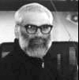

| ||||||||||||||||||
 | ||||||||||||||||||
Four hundred patients with SARS brought the critical care system of the entire city of Toronto to the point of collapse in 2003. In fact, every day there is a significant probability that a patient needing a critical-care bed in the United States will not be able to find it. Demographic trends are only going to make this situation worse, as are the risks of terrorist attacks or flu pandemics. Unfortunately, medical practice and knowledge is still balkanized, limiting the development and acceptance of best practices. Keynote speaker Timothy G. Buchman and respondents describe the challenges we face and what is being done to overcome them.
Timothy G. Buchman is the Harry Edison Professor of Surgery, professor of anesthesiology and of medicine, and chief of the Burn, Trauma, and Surgical Care Section of the Department of Surgery at Washington University School of Medicine in St. Louis. He is also director of the Level I Trauma Center, codirector of the Surgery/Burn/Trauma ICU, and attending surgeon at Barnes-Jewish Hospital in St. Louis. Buchman received an MD, a PhD in virology, an MS in organic chemistry, and a BS in chemistry from the University of Chicago. He completed his fellowship in traumatology and critical care at the Maryland Institute for Emergency Medical Service Systems and his residency and internship at the Johns Hopkins Hospital. Buchman was associate professor of surgery, assistant professor of emergency medicine, and director of the training program in surgical critical care at the Johns Hopkins University, where he also held a joint appointment in molecular biology and genetics.
Buchman is the associate editor of Shock and has been a member of the editorial boards of Critical Care Medicine, the International Journal of Surgical Investigation, the Journal of Surgical Research, the Journal of Critical Care, and the Journal of the American College of Surgeons. He has published approximately 150 journal articles, abstracts, books, and chapters. Buchman has had a career-long interest in complex systems science and its application to surgical critical care. He is funded by the James S. McDonnell Foundation and DARPA to pursue studies in this area, as well as by the NIH to pursue more traditional lines of surgical research.
Jeffrey D. Horbar, MD is a board-certified neonatologist and clinical scientist with extensive experience in clinical research and its application to the improvement of neonatal care. He is currently a Professor of Pediatrics at the University of Vermont College of Medicine, Chief Executive and Scientific Officer of the Vermont Oxford Network, Consulting Editor for Pediatrics electronic pages, and Co-Editor of the Neonatal Review Group of the Cochrane Collaboration. He is the principal investigator for several grant funded research projects related to measuring and improving the quality and safety of medical care for newborn infants and their families. Dr. Horbar has been responsible for the development of the Vermont Oxford Network Database which is used by over 575 NICUs around the world to monitor and improve outcomes for very low birth weight infants, and is the Director of the National Evidence-Based Quality Improvement Collaborative for Neonatology, NIC/Q 2005.
Vimla L. Patel is Professor of Biomedical Informatics and of Psychiatry at
Columbia University, Adjunct Professor of Psychology and Education (Human
Development) at Columbia Teachers' College in New York City, and Director of
Columbia's Laboratory of Decision Making and Cognition. With a BSc in Biochemistry and Microbiology from Otago University in New
Zealand, she completed a PhD in Educational Psychology (cognitive track) at
McGill University in Montreal, Canada, where she was subsequently became
Professor of Medicine and Psychology, and Director of the Cognitive Science
Centre and the Centre for Medical Education before moving to New York. An
elected fellow of the Royal Society of Canada (Academy of Social Science and
Humanities) and the American College of Medical Informatics, she was recipient
of the annual Swedish “Woman of Science” award in 1999. She received an
Honorary Doctor of Science degree from the University of Victoria, BC, Canada
in 1998 and became a fellow of the New York Academy of Medicine in 2004. She
has adapted methods and theories from cognitive science, has innovated new
approaches that address long-standing problems in competent performance in the
workplace and in learning, and has carried out research that provides a
scientific foundation for medical and health education.
Dr. Patel has authored more than 200 articles and book chapters, is an
Associate Editor of the Journal of Biomedical Informatics, and is on the editorial boards of a number of informatics and cognitive
science journals. Her research interests include medical expertise and expert
performance, distributed cognition, critical care decision-making, medical
errors, cognitive evaluation, and human-computer interaction in health care
domains. Her most recent work is targeted on the role of cognition in designing
a safer clinical workplace with better user-interface design and the effective
implementation of practice guidelines for professionals and laypeople alike.
She is currently funded by National Library of Medicine (NIH) for her research
on Cognition and error management in critical care, and by The National Institute of Mental Health (NIH) on Cognitive models of sexual decision making by young adults. Both these studies involve naturalistic decision making in complex real-life
environments where cognitive, socio-cultural, and epistemological issues
interact. The former research focuses on complexity of the distributed
cognitive system that underlies critical care decisions. More information is
available on her website.
A tradition within engineering design has been the development of a smaller number of ever more sophisticated devices in order to tackle ever more complex problems. This approach has been followed in areas as diverse as aviation, scientific computing, and detection of dangerous substances. Because of this trend, the opposite approach — using a large number of “dumb” devices — has mostly been ignored. Remarkably, this approach has been used in biological contexts, from the immune system to ant colonies, with extraordinary success. Keynote speaker Richard M. Murray and respondents describe the opportunities created by using large number of simple devices and the novel challenges posed by their autonomy and self-coordination.
Richard M. Murray received a BS degree in electrical engineering from the California Institute of Technology in 1985 and MS and PhD degrees in electrical engineering and computer sciences from the University of California, Berkeley, in 1988 and 1991, respectively. He is professor of control and dynamical systems at Caltech. Murray’s research is in the application of feedback and control to mechanical, information, and biological systems. His current projects include integration of control, communications, and computer science in multi-agent systems; information dynamics in networked feedback systems; analysis of insect flight-control systems; and synthetic biology using genetically encoded finite-state machines.
Murray recently served on a National Research Council committee on network science whose goal was to describe the current state of the art in network science and make recommendations that can be used to guide decisions about future directions in this area within the government. He is developing a new course at Caltech that is aimed at teaching the principles and tools of control — with particular emphasis on applications in biology and computer science — to a broader audience of scientists and engineers.
Melanie Mitchell received a a Ph.D. in Computer Science from the University of
Michigan in 1990. Her dissertation work with Douglas Hofstadter was on
cognitive modeling of analogy-making. She has held faculty or research
positions at the University of Michigan, the Santa Fe Institute (as Director of
the Institute's Adaptive Computation Program), the Los Alamos National
Laboratory, and the OGI School of Science and Engineering at the Oregon Health
& Science University.
She is currently Professor of Computer Science at Portland State University.
Dr. Mitchell has been the recipient of a University of Michigan Regents'
Fellowship, a Fellowship in the Michigan Society of Fellows, and a 21st Century
Research Award Grant from the J. S. McDonnell Foundation. She has also served
on the external faculty of the Santa Fe Institute. In 1997 she was selected to
give the Ulam Memorial Lectures in Complex Systems at the Santa Fe Institute.
Dr. Mitchell is the author of Analogy-Making as Perception (MIT Press,
1993) and An Introduction to Genetic Algorithms (MIT Press, 1996).
She is a co-editor of Adaptive Individuals in Evolving Populations:
Models and Algorithms (Addison Wesley, 1996) and Perspectives on Adaptation in Natural and Artificial Systems (Oxford University Press, 2005). She is also the author of over 60 research
papers in the fields of machine intelligence, cognitive science, and complex
systems.
Mitra Hartmann's research focuses on the neurobiology and biomechanics of active senasing behaviors, and on the development of bio-inspired computational models and hardware to test candidate neurobiological algorithms. Her lab is particularly interested in how sensory feedback is used in real time to guide motor activity, and how movement enables sensory acquisition and perception. The main scientific interests of the lab are:
How animal biomechanics enables efficient movement and active sensing.
How animals represent 3-dimensional spatial information using spatiotemporal variations in activity across 2-dimensional receptor sheets.
How the construction of hardware and computer models of animal movement and sensing can provide insights into the underlying organization of the nervous system.
Current research in the laboratory concentrates specifically on the sensory modulation of behaviors involving rhythmic movement, because rhythmic movement, and perturbations to it, is relatively easy to observe, measure, and quantify. The lab works with two model systems that use sensory feedback to modulate fundamentally periodic activity: rat whisking behavior, and bipedal locomotion. By studying how sensory feedback affects periodic motion, she hopes to gain insight into the continuous, recursive interplay between sensory and motor signals during active behaviors.
Speech and music are temporally structured by their rhythmic patterns. Rhythmic patterns distinguish one language from another, one dialect from another, and one musical style from another. Varied in themselves, temporal structures also induce immense variation in other aspects of the sound stream. Mastery of these structures, with all their manifestations, is a hallmark of the virtuoso musician or the expressive speaker. They pose a serious challenge to the language learner, whether this learner is a person or a computer.
Keynote speaker Mari Ostendorf and respondents from the fields of engineering, brain science, and sociolinguistics discuss the temporal structures of speech and music from different perspectives. How do patterns arise as markers of social identity? What kind of dynamical system is responsible for their production and perception in humans? How can machine learning techniques advance speech technology towards dialogue systems with rich, human-like, behavior?
Mari Ostendorf received a PhD in electrical engineering from Stanford University in 1985. She has worked at BBN Laboratories (1985-86) and Boston University (1987-99) and was a visiting researcher at the ATR Interpreting Telecommunications Laboratory in Japan in 1995. In 1999 she joined the University of Washington, where she is currently an endowed professor of system design methodologies in electrical engineering and an adjunct professor in computer science and engineering and in linguistics. She previously served as the electrical engineering associate chair for research (2001-03) and is now a visiting professor at the University of Karlsruhe, Germany. She teaches undergraduate and graduate courses in signal processing and pattern recognition and is spearheading the development of a course to introduce freshmen to signal processing and information technology.
Ostendorf’s research interests are in dynamic and linguistically motivated statistical models for speech and language processing. Her work has resulted in over 160 publications and two paper awards. Ostendorf has served on numerous technical and advisory committees and as coeditor of Computer Speech and Language (1998-2003); she is the current editor in chief of IEEE Transactions on Speech and Audio Processing. She is a fellow of the Institute of Electrical and Electronics Engineers and a member of the International Speech Communication Association, the Association for Computational Linguistics, the Acoustical Society of America, the Society of Women Engineers, and Sigma Xi.
Edward W. Large is an Associate Professor at the Center for Complex Systems and Brain Sciences and the Department of Psychology at Florida Atlantic University. He is also the founder of Circular Logic, a music software company based in Boca Raton, Florida. Prior to FAU, Dr. Large was a faculty member at University of Pennsylvania, in the Department of Psychology and the Institute for Research in Cognitive Science. He has held research fellowships at Toshiba's Artificial Intelligence Research Labs in Kawasaki, Japan and at the Air Force Research Laboratories. He received a B.S. from Southern Methodist University, where he studied mathematics and classical guitar performance. He received a Ph.D. from Ohio State University, where he studied computer science and psychology. He currently serves as Associate Editor of the journal Music Perception, and he serves on the scientific advisory board of the Institute for Music and Neurologic Function. His research addresses the question of how the brain responds to complex, temporally structured sequences of events, such as music and speech. His research program combines dynamical systems modeling, behavioral experimentation, neurophysiology and neuroimaging. His current projects include studies of auditory perception, attention and music cognition, funded by a National Science Foundation CAREER Award.
Zsuzsanna Fagyal is Assistant Professor of French and Linguistics at the
University of Illinos at Urbana-Champaign. A Hungarian native and a
Hungarian-German bilingual by birth, she obtained her MA degree in French and
Russian with honors at the Eotvos Lorand University in Budapest in 1991. She
graduated from the PhD program of the University of Paris III, Sorbonne, with
honors in 1995, holding a doctoral degree in Phonetics and French Linguistics.
After moving to the United States, she first learned English, and then she
worked as a Research Associate at the University of Pennsylvania on the
Phonological Atlas of North America with William Labov between 1996 and 1998,
in speech synthesis system at Eloquent Technology in 1998, and taught at Drexel
University, Philadelphia, in 1999.
At the University of Illinois since 1999, she teaches in the French department
as part of and extended phonetics and phonology program that encompasses the
departments of Linguistics, Spanish, East Asian languages, Psychology, Speech
and Hearing Sciences, and Computer Science.
Her research is on Phonetics, Phonology and Sociolinguistics of French, with
special emphasis on variable pronunciation in Parisian French.
Her most recent research projects dealt with vowel harmony, the prosodic and
social aspects of liaison sans enchainement, and more recently an on-going
project on contact features from North African spoken varieties of Arabic in
the intonation and rhythm of working-class adolescents of immigrant descent in
La Courneuve, a multi-ethnic working-class suburb North East of Paris.
She is the author of over thirty conference papers, book chapters, and journal
articles in a variety of subfields of phonetics and sociolinguistics, among
them Journal of Phonetics, Probus, Historiographia Linguistica, le Francais aujourd'hui 'Contemporary French', and Le Cahier de Sociolinguistique 'Sociolinguistic Papers'. She is the author of two upcoming books. The co-author, together with Douglas
Kibbee and Fred Jenkins of UIUC, of French a Linguistic Introduction in press with at Cambridge University Press, and the author of The accent of the suburbs: French prosody in contact with immigrant languages
Paris, accepted for publication by the French press, L'Harmattan.
Her interest in speech and music go back to her multilingual childhood and
musical training, she was trained as a singer and a violin player.
| ||||||||||||||||||
| ||||||||||||||||||

Conference Home |
Schedule |
Speakers |
Student Awards |
Registration |
Location |
Visiting Campus |
Contact Northwestern Institute on Complex Systems (NICO) Last updated 02/13/2006 World Wide Web Disclaimer and University Policy Statements © 2006 Northwestern University |
 |  |